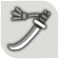

살아 숨쉬는 세계
다양한 생물군이 활발하게 살아가는 각종 필드,
탐색할수록 여러 가지를 발견하게 된다
헌터는 각각 특징과 액션이 다른 14종의 무기를 다룰 수 있다.
하나의 무기에만 집중할지, 여러 무기를 다룰지, 선택은 헌터의 몫이다.
대검
공격 속도나 이동은 느리지만 한 방의 위력이 강력합니다.
치고 빠지기나 가드 등 다양한 상황에 대처할 수 있습니다.
쌍검
연속 공격에 특화된 무기.
귀인화로 공격력이 더욱 강화됩니다.
귀인 강화 상태가 되면 일부 액션이 강화됩니다.

태도
날렵한 움직임과 연속 공격이 장점인 무기.
공격을 간파해 카운터 공격을 할 수 있습니다.
특정 공격을 적중시키면 연기 게이지가 상승합니다.
연기 게이지가 붉은색이 되면 일부 기술이 강화됩니다.
All trademarks referenced herein are the properties of their respective owners.
©CAPCOM